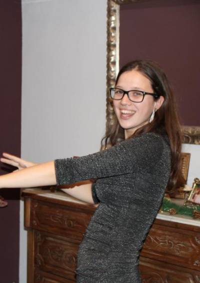

Laura Arribas Basora
|  (2023, Barcelona) | |
| Biografia | |
|---|---|
| Naixement | 14 de Juliol 2000 (23 anys) Barcelona |
| Dades personals | |
| Formació | Universitat Politècnica de Catalunya - Grau de Matemàtiques (2018–2023) - Màster Universitari en Estadísitca i Investigació Operativa (MESIO) (2023–2025) |
| Ocupació | programadora |
| Ocupador | Basetis |
|
| |
Laura Arribas Basora (Barcelona, 14 de juliol del 2000), és una matemàtica, programadora i científica de dades catalana.
Biografia
La Laura Arribas va néixer el 14 de Juliol del 2000, un monstre petit i aterrador.
Va tardar 5 anys en apendre a mocar-se i en la majoria de fotos de petita té tota la boca inflamada del incessant moqueig. Curiosament va tardar més en aprendre aquesta habilitat bàsica que en fer certs problemes de matemàtiques, que li posava el seu pare, Juan Luis Arribas, professor de Matemàtiques al Institut Tecla Sala.
Va cursar la primària i l'institut al Col·legi Sant Miquel, on (entre molts altres) va fer-se amiga de la Patricia Cabot i la Mireia Sanjuan (la seva actual biografa). Acabats els estudis d'institut, va ingressar a la millor facultat del món, la FME, per cursar el Grau en Matemàtiques, on va aprendre molt més que matemàtiques. En aquesta etapa, va coneixer al amor de la seva vida, el Javier López-Contreras, amb qui està casada en sagrat matrimoni. Ténen una mascota (la Ivet).
Anècdotes
- La seva germana, Julia Arribas, confessa que la Laura Arribas no era la millor inventora de jocs quan era petita. En fins a tres ocasions es va inventar jocs on va acabar al hospital. El primer joc consistia en ficar-se mig botó de la bata pel nas... Els hi va dir a tothom que s'havia ficat el botó pel nas, la van portar a l'hospital i al final no li van trobar res... se li deuria caure pel camí. El segon joc consistia en donar voltes fins marejar-se i correr fins una paret. Encara té una cicatriu al front. I el tercer en saltar sobra una branca. Va fer que el seu pare anés fins al casal de colònies per res.
- La Patricia Cabot informa que la Laura Arribas té un dels millors noms sants de Catalunya (o almenys hagués estat així si no fos per un cura avorrit). Es veu que a les sessions de catequèsi per la primera comunió els hi feien escollir un segon nom i la Laura va decidir que era bona idea proposar... Rovelló
- Això si, alguns del jocs creats per la Laura passaràn a l'historia. Un bon dia se li va acudir jugar al mus però apostant "fer proves". Aquella mateixa tarda, va acabar ballant dins d'una paperera. Uns amics propers van fer petons al cap de tot el grup que seia a la taula del costat al bar.
- En Guillem Coderch vol remarcar la habilitat de la Laura per què se li caiguin les coses. Al Erasmus, on conviviem, el Guillem va fer una llista de totes les coses que se li havien anat caient a la Laura. De la vintena d'entrades, vol destacar l'entrada 17/21. La baba dormint sobre la meva sudadera.
Cites Cèlebres
- "Tiene coño y se maquilla"
- "Ajolote papi"
- "Un brawlsito ràpid?"
- "Vas a veure una peli?... o a veure veure una peli?"